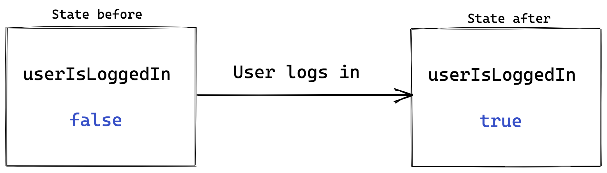

React - Week 2

What will we learn today?
Learning Objectives - React Week 2
Event Handlers
React to user interaction via events.
- Be able to pass functions to event handlers
- Log to the console when a button is clicked
State
Create a simple counter component, demonstrating knowledge of React state.
- Be able to use state variables
- Initialise with a value with
useState(initialValue) - Destructure state variable into
[stateValue, setStateValue] - Render state variables to the view
- Update with a new value with
setStateValue(newValue)
- Initialise with a value with
- Identify when to use props or state
Data fetching
Show some data from an API in a component.
- Can explain why a loading state is necessary when fetching data as the result is not available on the initial render
- Be able to trigger
fetch()using theuseEffect()callback- Be able to an empty array (
[]) as the 2nd dependencies argument - Understand that this will be explained further in week 3
- Be able to an empty array (
- Be able to store data from a successful API call in state
- And be able to explain that this causes a re-render
- Be able to catch an unsuccessful API call, store the error in state and render an error message
Recap
Last week we looked at how to write a HelloMentor React component (interactive example):
// Greeting.js
function Greeting() {
return <span>Hello</span>;
}
// Mentor.js
function Mentor(props) {
return <span>{props.name}</span>;
}
// index.js
import Greeting from './Greeting';
import Mentor from './Mentor';
function HelloMentor() {
return (
<div>
<Greeting />
<Mentor name="Ali" />
</div>
);
}
Handling events
So far we have only looked at React apps that are "static": they don't respond to user input. This week we will look at making our apps dynamic.
Recap: First-class functions in JavaScript
Before we look more at React we need to recap a concept in JavaScript. You may remember that functions in JavaScript are "first class" - that means we can pass a reference to a function (as a variable) and then call it elsewhere. Let's look at an example (interactive example):
function hello() {
return "Hello!";
}
console.log(hello); // Logs: "ƒ hello() {}"
console.log(hello()); // Logs: "Hello!"
In the example above hello is a reference to a function. In the first console.log we log out the whole function. The function is not called until we use parentheses (), so we only log the string "Hello!" in the second console.log.
This is a really important and useful in React, as we can make a function and pass it to React so that it can call it when a user interacts with our app.
Event handlers in components
In previous lessons we learned how to attach event listeners with addEventListener:
// Create an event handler
function logWhenClicked() {
console.log('buttonElement was clicked!')
}
// Listen for events and call the event handler when triggered
buttonElement.addEventListener('click', logWhenClicked)
We still need to listen events in React, but event handlers are set up in a slightly different way (interactive example):
function ClickLogger() {
function logWhenClicked() {
console.log("Button was clicked!")
}
return <button onClick={logWhenClicked}>Click me!</button>
}
You might find it a little strange that we have a function inside a function. But this is a normal thing to do in JavaScript! logWhenClicked is within the scope of our ClickLogger component.
Every element in React has some special props that start with on that can be assigned to a function which will be called when the event is triggered.
Here's a few examples:
onClick- the element was clickedonCopy- the clipboard is used to copy some textonKeyDown- a key is pressed downonBlur- the element loses "focus"onChange- only available for<input>&<select>(and a few others), triggered when changedonDoubleClick- the element was double-clicked!onPlay- a video starts playingonSubmit- a form element is submitted
A full list of special event handler props is available here.
Just like with addEventListener we pass the function reference to onClick instead of calling the function. Think of it like this: we give the function to React, so that React can call our function when the element is clicked.
| Exercise A |
|---|
1. Open the pokedex React application from last week and open the Logo.js file. |
2. Add a function named logWhenClicked within the Logo component. (Hint: look at the example above). |
3. In the logWhenClicked function, console.log a message (it doesn't matter what the message is). |
4. Add an onClick handler to the <img> that will call logWhenClicked. (Hint: look at the ClickLogger component above). |
| 5. In your web browser, try clicking on the logo image. What do you see in the JavaScript console? |
6. In a group of 2 - 3 students, discuss what would happen if you changed your code to onClick={logWhenClicked()}. Can you explain why? |
| 7. Report your discussion back to the rest of the class. |
Passing Functions as Props
Sometimes we need to pass a function to another component as a prop, so that it can handle the event.
A common example for this is a Button component. This component adds some styling to a normal <button>, but still needs to be able to pass an event handler function to onClick. Let's look at an example (interactive example):
function ClickLoggerApp() {
function logWhenClicked() {
console.log("Button was clicked");
}
return (
<div>
<FancyButton handleClick={logWhenClicked} />
<p>Then look in the console.</p>
</div>
);
}
function FancyButton(props) {
return (
<button className="my-fancy-classname" onClick={props.handleClick}>
Click Me!
</button>
);
}
Notice how this is very similar to the example above where we created the handler and used it in the same component? The only difference here is that we are passing the function reference through a prop. We could even pass it through multiple components as props.
| Exercise B |
|---|
1. Open the pokedex React application and open the Logo.js file. |
2. Copy and paste the logWhenClicked function from the Logo component to the App component. |
3. Pass the logWhenClicked function reference as a prop to the Logo component. (Hint: look at the ClickLoggerApp component above for an example). |
4. In the Logo component change the onClick prop so that it passes props.handleClick. (Hint: look at the FancyButton component above for an example). |
| 5. In a group of 2 - 3 students, discuss what you think will happen when you click the logo image now. Can you explain why? |
| 6. Report back to the rest of the class what you thought was going to happen and why. |
Re-rendering components
So far we've seen that when the page loads, React calls our function components. The JSX elements that are returned from the component functions are turned into the DOM for you by React.
To be able to react to changes, we need to re-render our function components to get different JSX elements. React can then update the DOM based on the new JSX elements.
Let's look at how a component is re-rendered (interactive version):
function Counter(props) {
console.log(`Rendering. props.likeCount is ${props.likeCount}`);
return <button id="like-button">Likes: {props.likeCount}</button>;
}
If you look in the console, you'll see that the component is rendered once when the page loads. props.likeCount starts at 0, so React inserts "Count: 0" into the DOM.
We won't look at how this works at the moment, but behind the scenes there is some code that will listen for clicks on the button and force React to update. That means when you click the button, the function component is called again (or re-rendered).
Now props.likeCount is 1. React now updates the DOM to make sure it shows the correct number. Every time we click the button, the function component is called and React updates the DOM for us.
We don't need to worry about changing the DOM ourselves! This is what makes React so powerful. Even better, React will figure out exactly the right bits of the DOM that need to be changed, a concept called the "virtual DOM". This makes it extremely efficient and fast.
State
State is a general concept in software engineering. It is used when a part of your app needs to "remember" something that changes when people interact with it.

This is a simple example, but if we had lots of bits of state, then we can make very complex apps.
React Hooks
React has built-in functionality for initialising and updating state in our components. We will access state via a React Hook called useState.
Hooks are a new-ish feature in React. You may find older tutorials that don't use Hooks, but don't panic. The concepts we learn here are the same whether or not you use Hooks. We are looking at Hooks first because they are simpler to learn for beginners.
Importing useState
To be able to access the useState Hook, we first need to import it from the React package. Let's look at an example (interactive example):
import React, { useState } from 'react';
console.log(useState)
If we look at the console, useState is just a function. It lives inside the React code that you installed when you created the app.
To reference the useState function in our component, we need to import it from the React code. The curly braces around useState are a bit like writing:
import React from 'react';
let useState = React.useState;
In fact we can just write React.useState in our component if we want! But to type a bit less code, we import it (using the curly braces) once and then can just use useState.
Using useState
Now let's look at how we can use the useState Hook (interactive example):
function Counter() {
const [count, setCount] = useState(0);
return <p>You clicked {count} times</p>;
}
Let's break this down into small pieces. First, let's look at calling the useState function:
useState(0)
This initialises the state variable to 0. Any parameter passed to useState will be used as the initial value.
Next, let's look at how we render the state variable in our component:
return <p>You clicked {count} times</p>;
count is just a variable, so to insert it into our JSX we treat it like any other variable: we use curly braces.
Finally, let's at how we get hold of the count variable:
const [count, setCount] = useState(0);
To fully understand this bit of code, we first have to understand destructuring. Let's look at this blog post by Wes Bos about array destructuring.
Now we can understand that useState is returning an array, with two items. The first item in the array is the current value of the count state. In our example it will be 0 on the first render.
The second item in the array is a function that we will use to update our state.
Note: You can call the 2nd item in the
useStatearray what you like, but it is widely accepted practice to name it set + the state variable name. Example:setCount, orsetUserIsLoggedIn
Updating State
Our Counter isn't very useful right now! Let's make it more useful by getting count to actually count up (interactive example):
function Counter() {
const [count, setCount] = useState(0);
function incrementCount() {
setCount(count + 1);
}
return (
<div>
<button onClick={incrementCount}>Click me</button>
<p>You clicked {count} times</p>
</div>
);
}
Our component now has a <button>, which will call the incrementCount function when clicked:
<button onClick={incrementCount}>Click me</button>
The incrementCount function then calculates the new state by adding 1 onto the current count. And then calls setCount to set the new state:
function incrementCount() {
setCount(count + 1);
}
setCount does two things. First, it updates the state that our component is "remembering". Whatever you pass as the argument to setCount will be remembered as the new state.
It also tells React that the old state that is still shown in the DOM is outdated and so the DOM needs to change. Because of this, React will re-render all of our components to figure out what to change in the DOM.
When re-rendering, useState now gives us the updated state:
function Counter() {
const [count, setCount] = useState(0);
...
}
On the second render, count is now set to 1. Every time we click the button, the whole cycle starts again.
| Exercise C |
|---|
1. Open the pokedex React application and open the CaughtPokemon.js file. |
2. Create a new state variable called totalCaught and initialise it to 0 |
3. When you create the totalCaught state, you should also set the function that will update this state (hint: refer to the syntax of the useState hook). |
4. Replace the number 0 in the JSX with your new totalCaught state. |
Don't mutate State
As we just learned, setCount updates the state for us, but it also notifies React of changes. Because of this we can't change (or mutate) state variables ourselves. In fact, React makes it impossible to modify (or mutate) state (interactive example):
function Counter() {
let [count, setCount] = useState(0);
function handleClick() {
count = count + 1;
}
return (
<div>
Count: {count}
<button onClick={handleClick}>Click</button>
</div>
);
}
Clicking the button doesn't do anything! React is letting us know that we have to use setCount to be able to update state.
Where does State live?
We have talked about how a component "remembers" state. In fact, each component instance remembers separate state from other components. This means we can have multiple different Counters, each with a different state (interactive example):
function App() {
return (
<div>
<Counter />
<Counter />
<Counter />
</div>
);
}
Setting multiple States
So far we've only seen an example with one state variable. But you can create multiple state variables if you want! Let's see an example (interactive example):
function FruitCounter() {
const [fruit, setFruit] = useState("bananas");
const [count, setCount] = useState(0);
function handleOrangesClick() {
setFruit("oranges");
}
function handleBananasClick() {
setFruit("bananas");
}
function incrementCount() {
setCount(count + 1);
}
return (
<div>
<div>
Pick a fruit:
<button onClick={handleOrangesClick}>Oranges</button>
<button onClick={handleBananasClick}>Bananas</button>
</div>
<p>
We have {count} {fruit}
</p>
<button onClick={incrementCount}>Increment</button>
</div>
);
}
| Exercise D |
|---|
1. Back in the CaughtPokemon.js file in your pokedex app |
2. Add a button to the component with an onClick handler that calls a function called incrementTotal. |
| 3. What do you think will happen when the button is clicked? Why is that? |
4. Using the fruits example above, make changes to the CaughtPokemon component so that the totalCaught state is increased by 1 on each click. Click here if you are stuck.TheincrementTotal function you created gets called onClick, but so far, it doesn't actually do anything. To fix this, incrementTotal will need to call the function you set when you created the totalCaught state (the 2nd item in the useState array). |
When do you use Props or State?
We've looked at the 2 main ways of managing data in our React components. But when should we use props and when should we use state?
Remember that props are like "arguments" to a component. It's good practice to make sure that you don't modify arguments after you receive them. Just like state, React prevents you from mutating them. Let's have a look at an example (interactive example):
function Greeting(props) {
function handleThing() {
props.name = "Mozart";
}
return (
<div>
<p>Hello {props.name}</p>
<button onClick={handleThing}>Click me</button>
</div>
);
}
When you click the button, you might expect the name prop to change to "Mozart". But it doesn't! React has made props read-only, which is a reminder that we shouldn't change props.
If we were allowed to change props, React doesn't have a way of telling that we've changed the data. Our UI is now stale - not up-to-date with the latest data - and has no way of knowing that it has to re-render.
From this we can get a clue about when to use state. If data changes over time, then we need to use state. My rule of thumb is that I always use props until I know that it needs to change over time, then I convert it to state.
Fetching Data in React
Often when you create a React app, you will want to get data from an API, and display it inside your components. How do we do this in React? Where does the API call go, and when should we trigger it?
Where: Usually in a parent component, at the top of the component tree (see the note about 'container' components above). You can then flow the data down into your child components as props.
When: When the component is first loaded into the DOM. We call this 'mounting'.
How: With a handy new hook called useEffect.
The useEffect Hook
Just like useState, the useEffect hook is a special function that all function components can import and use as needed. This is the syntax to follow to fetch data when the component is first mounted:
useEffect(() => {
// Make your fetch API call here
}, []); // Don't forget the empty array here!
And here is a more complete example (see interactive example):
import React, { useState, useEffect } from "react"; // remember to import the Hook(s) you need!
function MartianPhotoFetcher() {
const [marsPhotos, setMarsPhotos] = useState({});
useEffect(() => {
fetch(
`https://api.nasa.gov/mars-photos/api/v1/rovers/curiosity/photos?earth_date=2015-6-3&api_key=DEMO_KEY`
)
.then(res => res.json())
.then(data => setMarsPhotos(data));
}, []);
if (marsPhotos.photos) {
return (
<div>
{marsPhotos.photos.map((photo, index) => {
return (
<img
key={`mars-photo-${index}`}
src={photo.img_src}
alt={photo.camera.name}
/>
)
})}
</div>
)
} else {
return <div>Loading...</div>
}
}
export default MartianPhotoFetcher;
In the code above, we're saying to React “When this component is mounted, call the NASA photos API, and when you receive a response, save it inside of the 'marsPhotos' state”.
This is a very common pattern which will come in very useful!
| Exercise E |
|---|
1. Open the pokedex React application again and open the src/BestPokemon.js file. |
2. Add a new component inside src/BestPokemon.js called BestPokemonFetcher. |
3. Change the export default to export BestPokemonFetcher instead of BestPokemon. We don't need to make any changes to the BestPokemon component. |
4. In the new BestPokemonFetcher component, create a new state variable called bestPokemon and initialise it to null. Click here if you are stuck.Look at the State section to see how to create state variables. |
5. If there is no bestPokemon state (hint: if (!bestPokemon) {}), then return null so that the component renders nothing. |
6. If there is some bestPokemon state (else {}), then render the BestPokemon component and pass the bestPokemon state variable as the pokemon prop (hint: <BestPokemon pokemon={bestPokemon} />). |
7. Now add a useEffect to the BestPokemonFetcher component. Make sure you remember to add the empty array after the callback function. Click here if you are stuck.Look at the examples above to see how to adduseEffect. |
8. Inside the useEffect callback, call the fetch function with this URL: https://pokeapi.co/api/v2/pokemon/1/. |
9. Add a .then handler into the fetch function (remember this needs to come immediately after the fetch call) which converts the response from JSON (hint: .then(res => res.json())). |
10. Add a second .then handler after the one we just added, where the callback function will receive an argument called data. |
11. Within the second .then callback function, log out the data that we just received (hint: console.log(data)). Inspect the data in the dev tools console. Can you see any interesting values? (Hint: think about what the BestPokemon component expects as a prop) |
12. Still within the second .then callback function, update the bestPokemon state variable. Click here if you are stuck.Refer to the State section again to see how to set state variables to new values. |
| 13. What happens in your browser? Do you understand why? If not, discuss it with another student. If you are both stuck, ask a Teaching Assistant. |
A note on conditional rendering
In the MartianPhotoFetch component above, we have wrapped our JSX inside an if / else statement. This is common practice in React, as it allows us to show something different depending on the situation (for example if there is no data to display, show the user something else instead).
The syntax above is correct, but you may also see this done in 2 other ways:
The ternary operator ? :
The ternary operator follows this structure condition ? output1 : output2.
The double ampersand &&
The double ampersand && is used when you don't have an else. The implication is that when the condition is not fulfilled, nothing will render.
Let's see what that looks like in our component:
with the ternary operator:
return (
marsPhotos.photos ? (
<div>
{marsPhotos.photos.map((photo, index) => {
return (
<img
key={`mars-photo-${index}`}
src={photo.img_src}
alt={photo.camera.name}
/>
)
})}
</div>
) : (
<div>Loading...</div>
)
)
with &&:
return (
marsPhotos.photos && (
<div>
{marsPhotos.photos.map((photo, index) => {
return (
<img
key={`mars-photo-${index}`}
src={photo.img_src}
alt={photo.camera.name}
/>
)
})}
</div>
)
)
You'll notice in the && example above, we do not render a 'Loading...' message, because there is no alternative output (no 'else').
| Exercise F |
|---|
Go back to the BesPokemon.js file |
Change the if / else statement in your JSX to use the ternary operator instead |
Container components
In real world applications, the things we want to remember in state follow the business logic required by our users. So for example the number of caught Pokemon in the exercise increases when you click on the button Catch Pokemon. Most of the time, business logic is about figuring out when and how to change state.
To help us cleanly split up code that performs business logic from code that shows the user interface, we split components into presentational and container components. Often we have components that don't do anything except manage state according to the business rules and render the right presentational components. On the other hand, we often have components that don't change any state, and just render using the provided props.
Container components usually have some state and handler methods, while presentational components usually just receive props and render JSX using these props.
| Exercise G |
|---|
| Take a look at the componenets in your Pokedex app - can you identify a good use case for a 'container' component? What about 'presentational' components? |
| Discuss this with another student. |
Further Reading
What happens if you forget to pass a prop to a component? Or if you pass the wrong type of data to a component? Sometimes React will just render an empty element but sometimes it could throw an error! This is why propTypes are useful. This page on the React documentation describes how to use propTypes in more detail.
Exercise H Complete the FreeCodeCamp exercise on
propTypes:
Homework
- If you haven't already, complete the in-class exercises on your
pokedexapp - Complete all of the lesson 2 exercises in the cyf-hotel-react project. Push them to your GitHub account and complete the Homework Form, use the form to notify your comments and questions about the exercises
Prepare for the next class
- Finish reading the official React tutorial
- Read the lifecycle page on the official React documentation
- Read the AJAX page on the official React documentation
- Watch this video tutorial on fetching data in React